綜合大獎
General
6 個獎項年度唱片
Record Of The Year
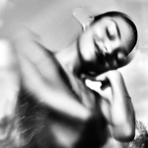
Man I Need
Olivia Dean

Choosin' Texas
Ella Langley
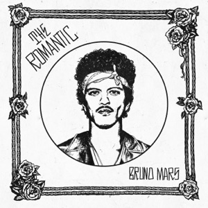
I Just Might
Bruno Mars
WHERE IS MY HUSBAND!
RAYE

the cure
Olivia Rodrigo

Berghain
ROSALÍA, Björk, Yves Tumor
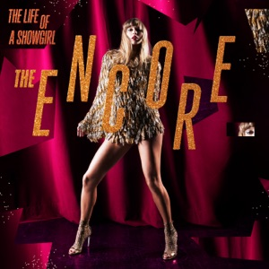
The Fate of Ophelia
Taylor Swift
Dracula
Tame Impala, JENNIE
年度專輯
Album Of The Year

Lost Weekend
Phoebe Bridgers
The Art of Loving
Olivia Dean
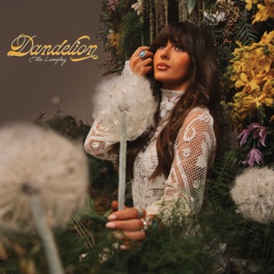
Dandelion
Ella Langley
The Romantic
Bruno Mars

THIS MUSIC MAY CONTAIN HOPE.
RAYE
you seem pretty sad for a girl so in love
Olivia Rodrigo
LUX (Complete Works)
ROSALÍA
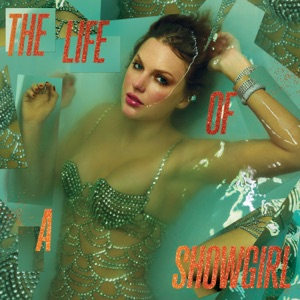
The Life of a Showgirl
Taylor Swift
年度歌曲
Song Of The Year
Berghain
Björk, Noah Goldstein, Jake Miller, ROSALÍA, Dylan Wiggins
Choosin' Texas
Luke Dick, Miranda Lambert, Ella Langley, Joybeth Taylor
the cure
Daniel Nigro, Olivia Rodrigo
hate that i made you love me
Ariana Grande, Max Martin, Ilya

I Knew It, I Knew You (from Toy Story 5)
Jack Antonoff, Taylor Swift
Man I Need
Olivia Dean, Tobias Jesso, Jr., Zach Nahome
Risk it All
Dernst Emile II, James Fauntleroy, Philip Lawrence, Bruno Mars
WHERE IS MY HUSBAND!
RAYE, Mike Sabath
最佳新人
Best New Artist
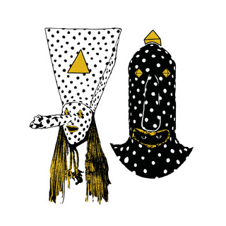
Angine de Poitrine

Geese
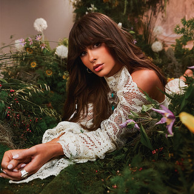
Ella Langley

Slayyyter
Sienna Spiro

Don Toliver
Remi Wolf

The Womack Sisters
年度製作人（非古典）
Producer Of The Year, Non-Classical
Tony Berg
未上架Dernst Emile II
Noah Goldstein
未上架
Miranda Lambert
Mike Sabath
年度詞曲創作者（非古典）
Songwriter Of The Year, Non-Classical

Amy Allen

Edgar Barrera
RAYE
Joybeth Taylor
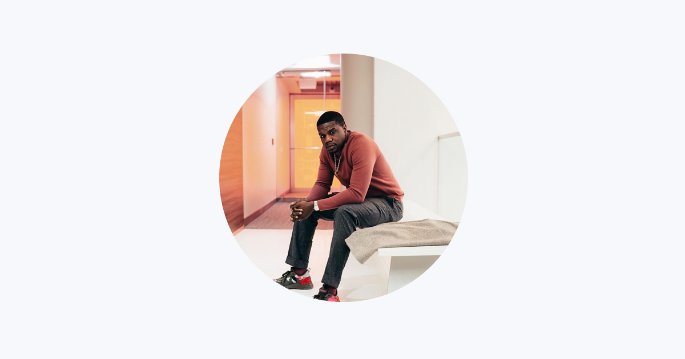
Theron Thomas
流行與舞曲／電子
Pop & Dance/Electronic
8 個獎項最佳流行歌手演出
Best Pop Solo Performance
Man I Need
Olivia Dean
Risk It All
Bruno Mars
WHERE IS MY HUSBAND!
RAYE
the cure
Olivia Rodrigo
Sauvignon Blanc
ROSALÍA
最佳流行組合／團體演出
Best Pop Duo/Group Performance

RUNWAY
Lady Gaga, Doechii
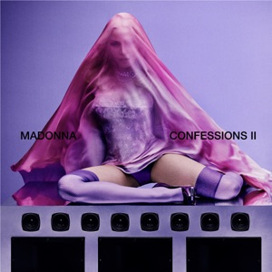
Bring Your Love
Madonna, Sabrina Carpenter
Click Clack Symphony.
RAYE, Hans Zimmer
The Life of a Showgirl
Taylor Swift, Sabrina Carpenter
Dracula
Tame Impala, JENNIE
最佳亞洲流行音樂演出
Best Asian Pop Music Performance

Sunset Kiss
BABYMETAL, Polyphia

Unang Kilig
BINI
BANG BANG
IVE

404 (New Era)
KiiiKiii
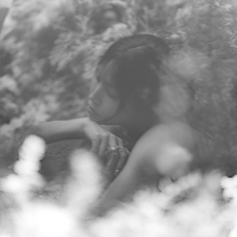
YES
LiSA
VISA
SB19
最佳流行演唱專輯
Best Pop Vocal Album
The Art of Loving
Olivia Dean
petal
Ariana Grande
The Romantic
Bruno Mars
THIS MUSIC MAY CONTAIN HOPE.
RAYE
you seem pretty sad for a girl so in love
Olivia Rodrigo
最佳舞曲／電子錄音
Best Dance/Electronic Recording

Lights Burn Dimmer
Fred Again.., (Jamie T)
I Feel So Free
Madonna
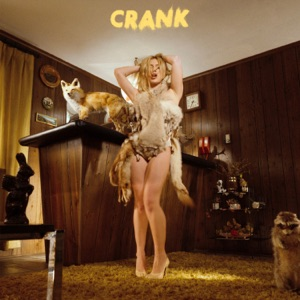
CRANK
Slayyyter

My Old Ways
Tame Impala

Melatonin
Tinashe
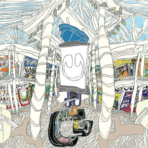
Music
underscores
最佳流行舞曲錄音
Best Dance Pop Recording

Blue Moon
Zara Larsson

Danceteria
Madonna
Life Boat.
RAYE

DANCE...
Slayyyter

Too Easy
Tinashe
最佳舞曲／電子專輯
Best Dance/Electronic Album
CONFESSIONS II
Madonna

Sexistential
Robyn

SOMA
Skrillex
WOR$T GIRL IN AMERICA
Slayyyter
Deadbeat
Tame Impala
最佳混音錄音
Best Remixed Recording
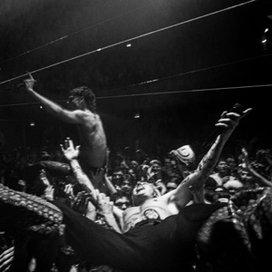
Beto's Horns (fred remix)
Fred again.., Tom Norris
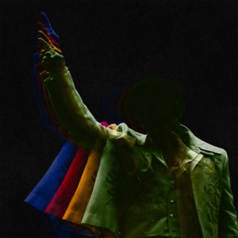
I Just Might (Austin Millz remix)
Austin Millz
Love Sensation
Jacques Lu Cont

Opalite (Chris Lake Remix)
Chris Lake
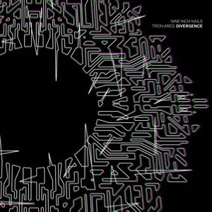
A Question of Trust - Boys Noize Remix
Boys Noize

WHERE IS MY HUSBAND!
David Guetta, Hypaton
搖滾、金屬與另類
Rock, Metal & Alternative Music
6 個獎項最佳搖滾演出
Best Rock Performance
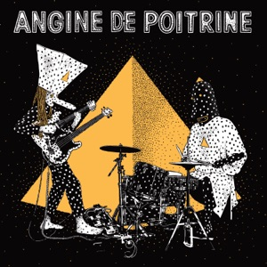
Sarniezz
Angine de Poitrine
Lost Boys
Phoebe Bridgers

Trinidad
Geese
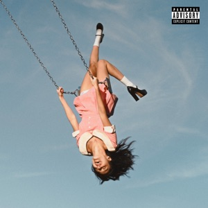
what's wrong with me
Olivia Rodrigo, Robert Smith
In The Stars
Rolling Stones
最佳金屬演出
Best Metal Performance
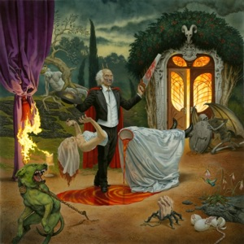
The Edge of Perfection
Anthrax
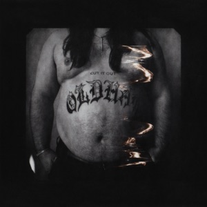
Hive Mind
Knocked Loose, Denzel Curry
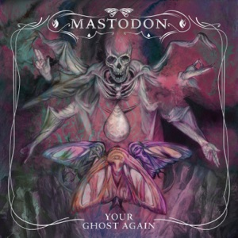
Your Ghost Again
Mastodon

Let There Be Shred
Megadeth

End of You
Poppy, Amy Lee, Courtney LaPlante
最佳搖滾歌曲
Best Rock Song
In The Stars
Mick Jagger, Keith Richards
Lost Boys
Phoebe Bridgers, Bo Burnham, Alex G, Christian Lee Hutson, Marshall Vore
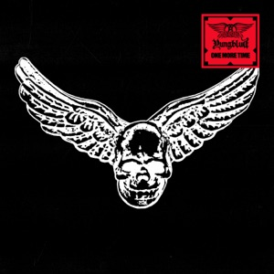
My Only Angel
Joe Perry, Matt Schwartz, Steven Tyler, YUNGBLUD

Streets of Minneapolis - Radio Mix
Bruce Springsteen
Trinidad
Max Bassin, Dominic DiGesu, Emily Green, Cameron Winter
what's wrong with me
Daniel Nigro, Olivia Rodrigo, Sasha Sloan

Your Favorite Toy
Foo Fighters
最佳搖滾專輯
Best Rock Album
Vol.II
Angine de Poitrine
Your Favorite Toy
Foo Fighters
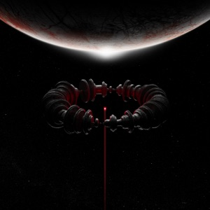
The Wow! Signal
Muse
Foreign Tongues
Rolling Stones

Frozen Charlotte
Jack White
最佳另類音樂演出
Best Alternative Music Performance
Fabienk
Angine de Poitrine
Kill Me
Phoebe Bridgers

Au Pays du Cocaine
Geese
Reliquia
ROSALÍA

Showbiz
Hayley Williams
最佳另類音樂專輯
Best Alternative Music Album
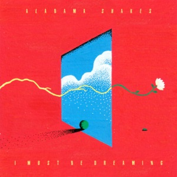
I Must Be Dreaming
Alabama Shakes
Lost Weekend
Phoebe Bridgers
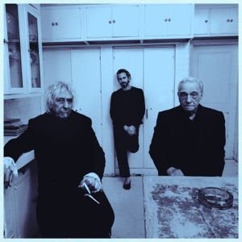
Music, Fashion, Film
Charli XCX
Getting Killed
Geese
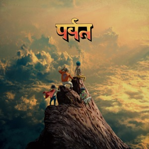
The Mountain
Gorillaz
LUX (Complete Works)
ROSALÍA
節奏藍調、饒舌與詩歌朗誦
R&B, Rap & Spoken Word Poetry
11 個獎項最佳節奏藍調個人演出
Best R&B Solo Performance

MORNING DEW (DONK)
Beyoncé Knowles

Out The Window
Kehlani

Let Me
Victoria Monét

Pressha
Jill Scott

What You Need
Tems
最佳節奏藍調合作／組合演出
Best R&B Collaboration or Duo/Group Performance
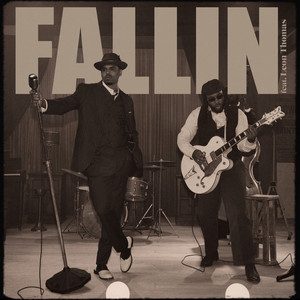
Fallin'
Chris Brown, Leon Thomas III

47th Street
Lalah Hathaway, J. Ivy

Sweet Nuthins
Kehlani, Leon Thomas III
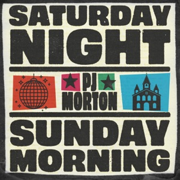
Mess
PJ Morton, Keyon Harrold
To B Honest
Jill Scott, J.I.D
最佳傳統節奏藍調演出
Best Traditional R&B Performance

I Found Myself
Durand Bernarr

Can't Let Go
Lalah Hathaway
Beautiful People
Jill Scott
My Muse
Leon Thomas III

If I Let You
The Womack Sisters
最佳節奏藍調歌曲
Best R&B Song
Let Me
Jahshua Brown, Darhyl "DJ" Camper, Jeff “Gitty” Gitelman, Tiyon Mack, Victoria Monét, Branden Rowell
My Muse
Lazaro Andres Camejo, Rob Gueringer, Nile Eugene Hargrove, Peter Lee Johnson, Marcus Clayton Paul, D. Phelps, Leon Thomas III
Out The Window
Antonio Dixon, Kehlani, Ashton Norful, Khristopher Riddick-Tynes, Talay Riley
Pressha
Adam W. Blackstone, Jill Scott, Vincent Tolan
What You Need
Guiltybeatz, Tems
最佳前衛節奏藍調專輯
Best Progressive R&B Album
BERNARR.
Durand Bernarr

Waves
Moonchild

The Last Balloon
Tank And The Bangas
PHOLKS
Leon Thomas III

Distracted
Thundercat
最佳節奏藍調專輯
Best R&B Album
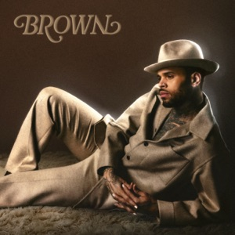
BROWN (The Chocolate Edition)
Chris Brown

When The City Sleeps
Alex Isley
Kehlani
Kehlani

Saturday Night
PJ Morton

To Whom This May Concern
Jill Scott
最佳饒舌演出
Best Rap Performance

Good Flirts
Baby Keem, Kendrick Lamar, Momo Boyd

ErrTime
Cardi B
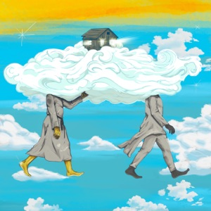
Run It Back!!
De La Soul, Nas
LET 'EM KNOW
T.I.
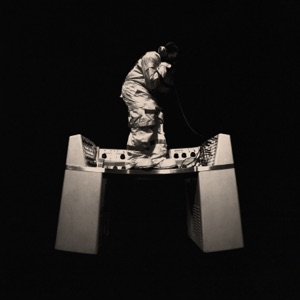
Body
Don Toliver
最佳旋律饒舌演出
Best Melodic Rap Performance

This Woman
Busta Rhymes
Safe
Cardi B, Kehlani
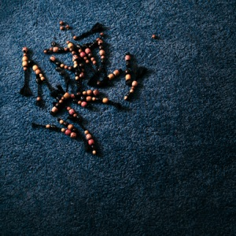
girl, get up.
Doechii, SZA
E85
Don Toliver

Watching Us
Wale, Leon Thomas III
最佳饒舌歌曲
Best Rap Song
E85
Derek Anderson, Aaron Paryce Cheung, Jaasu Mallory, Travis Scott, Don Toliver
ErrTime
Matthew Allen, Javaan Durrell Anderson, Cardi B, Ronnie Jackson, James D. Steed, Jordan Thorpe
girl, get up.
Darius Dixson, Doechii, Jahlil Gunter, SZA, Anthony "Moosa" Tiffith, A. Tiffith
LET 'EM KNOW
T.I., Pharrell Williams

Spend Dat
Caresha Romeka Brownlee, Akil King, Maurice "Verse" Simmonds, J White Did It
最佳饒舌專輯
Best Rap Album
DILLAGENCE II
Busta Rhymes
AM I THE DRAMA?
Cardi B

God Gotta Afro & Gold Hoops
Rapsody
OCTANE
Don Toliver
everything is a lot.
Wale
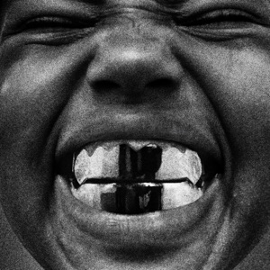
BULLY - DELUXE
Kanye West
最佳詩歌朗誦專輯
Best Spoken Word Poetry Album

Black Shaman Strikes Back
Marc Marcel
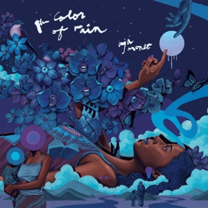
the color of rain
Aja Monet
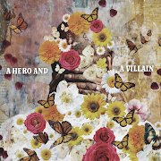
A Hero And A Villain
Mad Skillz
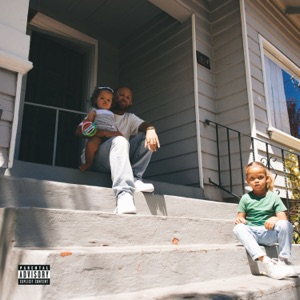
How Love Grows
Jwalt
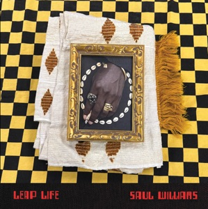
Leap Life
Saul Williams
爵士、傳統流行、當代演奏與音樂劇
Jazz, Traditional Pop, Contemporary Instrumental & Musical Theater
10 個獎項最佳爵士演出
Best Jazz Performance

In Walked Bud
Jon Batiste
Good Life - TAMRON HALL Main Title Theme
The Baylor Project

Sophisticated Lady
Cécile McLorin Salvant, Metropole Orkest, Jules Buckley
The Lady is a Tramp
Deborah Silver, Diane Schuur
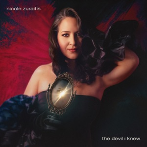
i get along without you very well (except sometimes)
Nicole Zuraitis, Christian McBride, Gilad Hekselman, Dan Pugach
最佳爵士演唱專輯
Best Jazz Vocal Album
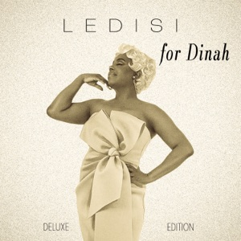
For Dinah
Ledisi

The Wise Ones
Gretchen Parlato
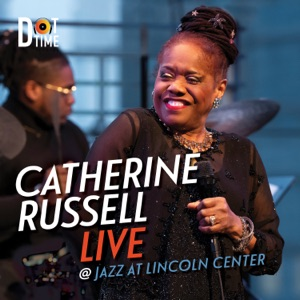
Live At Jazz At Lincoln Center
Catherine Russell
With Every Breath I Take
Cécile McLorin Salvant, Metropole Orkest, Jules Buckley
the devil i knew
Nicole Zuraitis
最佳爵士演奏專輯
Best Jazz Instrumental Album
Monk Movements
Jon Batiste
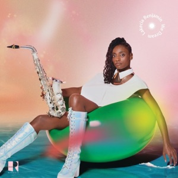
We Dream
Lakecia Benjamin

Forever Yours: The Farewell Performance (Live)
Chick Corea
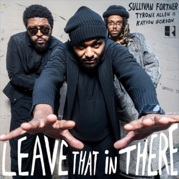
Leave That In There
Sullivan Fortner
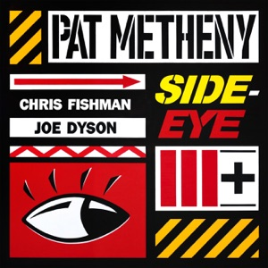
Side-Eye III+
Pat Metheny
最佳大型爵士樂團專輯
Best Large Jazz Ensemble Album
Paco de Lucía, Music for Big Band (Live)
Alex Conde

In The Brass Palace
Kurt Elling, WDR Big Band
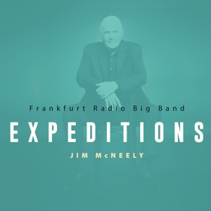
Jim Mcneely Expeditions
Frankfurt Radio Big Band, Jim McNeely

25 Years of Phatness
Gordon Goodwin's Big Phat Band, Gordon Goodwin

Oracles
Helen Sung
最佳拉丁爵士專輯
Best Latin Jazz Album
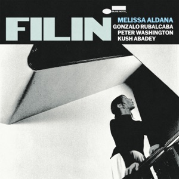
Filin
Melissa Aldana

Ao Vivo (Live)
Eliane Elias
Monk Con Clave
Carlos Henriquez, Gonzalo Rubalcaba, Pedro Martinez, Anthony Almonte, Osmany Paredes, Jeremy Bosch, Robert Rodriguez

GONZALO Plays PINO
Gonzalo Rubalcaba

El Arte Del Bolero Vol. 3
Miguel Zenón, Luis Perdomo
最佳另類爵士專輯
Best Alternative Jazz Album
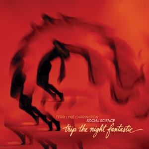
Trip the Night Fantastic
Terri Lyne Carrington

WHO ASKED?
DOMi & JD Beck

PURPOSE
Terrace Martin, Marcus Gilmore

Oh Snap
Cécile McLorin Salvant
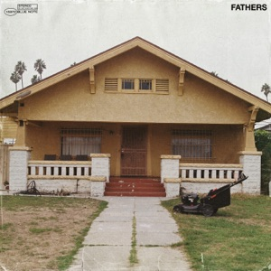
Fathers
Nate Smith, Kiefer, CARRTOONS, Kenny Beats
最佳傳統流行演唱
Best Traditional Pop Vocal Performance
A Couple Minutes
Olivia Dean

For Good
Cynthia Erivo, Ariana Grande

Madwoman
Laufey
I Hate The Way I Look Today.
RAYE
all that's left
Nicole Zuraitis, Gilad Hekselman
最佳傳統流行演唱專輯
Best Traditional Pop Vocal Album
Good Grief
Sara Bareilles

The Boys of Dungeon Lane
Paul McCartney

Better Broken
Sarah McLachlan
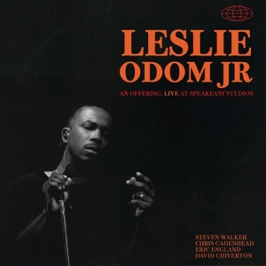
An Offering: Live at Speakeasy Studios
Leslie Odom, Jr.
Whatever's Clever!
Charlie Puth
最佳當代演奏專輯
Best Contemporary Instrumental Album
Monk Meditations
Jon Batiste
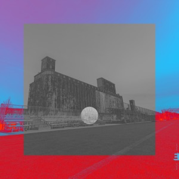
Lullaby for the Lost
Donny McCaslin

A Six String Odyssey
Six String Symphony

Somni
Snarky Puppy, Metropole Orkest, Jules Buckley
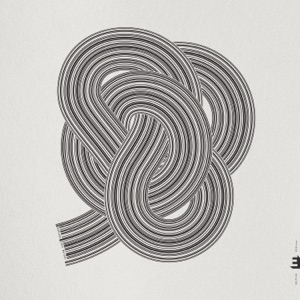
BaRcoDe
Ben Wendel
最佳音樂劇專輯
Best Musical Theater Album

CHESS the Musical
Nicholas Christopher, Hannah Cruz, Bradley Dean, Lea Michele, Bryce Pinkham, Aaron Tveit, Benny Andersson, Ludvig Andersson, Brian Usifer
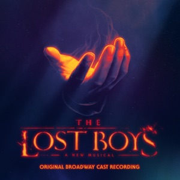
The Lost Boys
Shoshana Bean, LJ Benet, Ali Louis Bourzgui, Paul Alexander Nolan, Benjamin Pajak, Maria Wirries, Kyler England, Adrianne Gonzalez, Gabriel Mann, Ethan Popp

Ragtime
Colin Donnell, Joshua Henry, Caissie Levy, Nichelle Lewis, Ben Levi Ross, Brandon Uranowitz, Lynn Ahrens, Sean Patrick Flahaven, Stephen Flaherty

Schmigadoon!
Alex Brightman, Sara Chase, Ana Gasteyer, Doug Besterman, David Chase, Cinco Paul, Scott M. Riesett
Two Strangers (Carry A Cake Across New York)
Christiani Pitts, Sam Tutty, Jim Barne, Nick Finlow, Tim Jackson, Lux Pyramid, Kit Buchan
鄉村與美國根源音樂
Country & American Roots Music
15 個獎項最佳鄉村個人演出
Best Country Solo Performance
The Whole World
Vince Gill
Choosin' Texas
Ella Langley
Dry Spell
Kacey Musgraves
Can't Sit Still
Lainey Wilson

Gary
Stephen Wilson Jr.
最佳鄉村組合／團體演出
Best Country Duo/Group Performance
Butterfly
Zac Brown Band, Dolly Parton
Here
Mumford & Sons, Chris Stapleton

Horses and Divorces
Kacey Musgraves, Miranda Lambert

Light of a Clear Blue Morning
Dolly Parton, Lainey Wilson, Miley Cyrus, Queen Latifah, Reba McEntire
Phone, Keys, Wallet
Lainey Wilson, John Mayer
最佳鄉村歌曲
Best Country Song

Beautiful Things
Jessi Alexander, Jessie Jo Dillon, Connie Harrington, Megan Moroney
Choosin' Texas
Luke Dick, Miranda Lambert, Ella Langley, Joybeth Taylor
Dry Spell
Luke Laird, Shane McAnally, Kacey Musgraves, Josh Osborne
Hardwired
Black Francis, Jesse Frasure, Adam Hood, Miranda Lambert, Stephen Wilson Jr.
Phone, Keys, Wallet
Trannie Anderson, Jon Decious, Tom Hull, Summer Overstreet, Dan Pellarin, Dallas Wilson, Lainey Wilson
最佳傳統鄉村專輯
Best Traditional Country Album
Clovis
Charley Crockett

50 Years From Home: Down At The Borderline
Vince Gill

Banks Of The Trinity
Cody Johnson
Workin' Man: Willie Sings Merle
Willie Nelson
Once Upon a Second Time Around
Charlie Worsham
最佳當代鄉村專輯
Best Contemporary Country Album
Mount Pleasant
Kelsea Ballerini
Cherry Valley
Carter Faith
Dandelion
Ella Langley

Cloud 9
Megan Moroney
Middle of Nowhere
Kacey Musgraves
最佳美國根源演出
Best American Roots Performance
Still Crying
Sara Bareilles

You Without Me
Brandi Carlile

Coyote
Chuck Leah

Human Mind
Mavis Staples
No Kings
Jesse Welles, Joan Baez
最佳美式民謠演出
Best Americana Performance
Heartland
Sara Bareilles
Returning To Myself
Brandi Carlile
Sad and Beautiful World
Mavis Staples

Mill Town Flood
Billy Strings
Masks Off
Jesse Welles
最佳美國根源歌曲
Best American Roots Song
Masks Off
Jesse Welles
My Full Name
Madison Cunningham
Returning To Myself
Brandi Carlile

Tennessee Sunshine
Mary Dawood Catlin, Todd Catlin, Grant Maloy Smith
Waist Deep
Zac Cockrell, Heath Fogg, Brittany Howard
最佳美式民謠專輯
Best Americana Album
Returning To Myself
Brandi Carlile
Sad And Beautiful World
Mavis Staples
Future Soul
Tedeschi Trucks Band

Masks Off
Jesse Welles

World's Gone Wrong
Lucinda Williams
最佳藍草專輯
Best Bluegrass Album

Rattlin' Bones
Bronwyn Keith-Hynes

Safe, Sensible And Sane
Alison Brown, Steve Martin

Bluegrass Women
Lindsay Lou
So Much For Goodbyes
Billy Strings

Earl Jam 2
Tony Trischka
最佳傳統藍調專輯
Best Traditional Blues Album

Zydeco Trailrides and Southern Soul
Sean Ardoin And Kreole Rock And Soul, Mr. Sipp

B.B. King's Blues Summit 100
Joe Bonamassa
Morgan Freeman's Symphonic Blues Experience
Ground Zero Blues Club Band, Chineke! Orchestra, Martin Gellner
BLUES NOW
GA-20, Charlie Musselwhite
Slideways
Lil' Ed & The Blues Imperials
最佳當代藍調專輯
Best Contemporary Blues Album

Alive! (Live)
Fantastic Negrito

Paper Doll (Live)
Samantha Fish

Just Say Yes
Ruthie Foster
Hard Road
Christone "Kingfish" Ingram
The Breakdown
Keb'Mo'
最佳傳統民謠專輯
Best Traditional Folk Album

The Fiddle and the Drum
Renee Fleming, Béla Fleck

North Node
Brittany Haas

The Fiddle Funnel Sessions
E J Ouellette

Together Again
Tom Paxton, John McCutcheon
Under The Powerlines III (January 2025 - June 2025)
Jesse Welles
最佳當代民謠專輯
Best Contemporary Folk Album
Le Sigh
Kris Angelis
Ace
Madison Cunningham
The Great Divide: The Last Of The Bugs
Noah Kahan
Lost Cause Lover Fool
The Milk Carton Kids
Bloodline
Mon Rovîa
最佳地方根源音樂專輯
Best Regional Roots Music Album
Louisiana Love
Robin Barnes

Live at Tipitina's 2025
Dumpstaphunk

This Village
Ranky Tanky
Ain't No Dying
The Rumble Featuring Chief Joseph Boudreaux Jr.

Tongva Songs We Are Here Ekwa Chem
Tongva Ensemble, Connor Chee, Geneviève Gros-Louis
福音與當代基督教音樂
Gospel & Contemporary Christian Music
5 個獎項最佳福音演出／歌曲
Best Gospel Performance/Song

Thank You For Everything
Kirk Franklin, Karen Clark-Sheard

Watches Over Me
Cory Henry, Hezekiah Walker, The Brent Fischer Orchestra

Promises 2.0
Lisa Knowles-Smith & The Brown Singers

Mercy
PJ Morton
At The Cross
CeCe Winans
最佳當代基督教音樂演出／歌曲
Best Contemporary Christian Music Performance/Song

God I'm Just Grateful
Elevation Worship, Chandler Moore, Ammo, Pat Barrett, Steven Furtick, Abubakar Baker Shariff-Farr

Ale-luya Medley
Israel & New Breed, Kevin Camp, Nate Diaz, Israel Houghton, Angel Omar Martinez, Aaron Moses

The Jesus I Know Now
Brandon Lake, Lainey Wilson, Luke Laird, Emily Weisband
Living Water
Lecrae, Miles Corayer, Jonah Glass, Lasanna Harris, Andrew "Lihtz" Howard, Joel McNeill, John McNeill
Left It In The River
Jamie MacDonald, Jonathan Gamble, Colby Wedgeworth

Worthy Of It All (Worthy)
CeCe Winans
最佳福音專輯
Best Gospel Album
Devotion
Cory Henry

Revival: Live in Dallas
Lisa Knowles-Smith & The Brown Singers

Closer (Live In Chicago)
Jonathan McReynolds

Sunday Morning
PJ Morton

The Hymns
CeCe Winans
最佳當代基督教音樂專輯
Best Contemporary Christian Music Album
Shiloh
DOE
CORITOS Vol. 2
Israel & New Breed
KING OF HEARTS - IN THE ROOM!
Brandon Lake

Jamie MacDonald
Jamie MacDonald

Breathe On It
Tauren Wells
最佳根源福音專輯
Best Roots Gospel Album

Through The Fire
Jason Crabb
On A Different Note
Tim Lovelace

Light. Hope. Faith.
Cara Paige
A Fireside Christmas
Karen Peck & New River

Rise and Shine
Sunday Drive
拉丁、世界、非洲、雷鬼與新世紀
Latin, Global, African, Reggae & New Age, Ambient, Or Chant
11 個獎項最佳拉丁歌曲
Best Latin Song
Ahí
Drake, KAROL G, Kevyn Mauricio Cruz Moreno, Ovy On The Drums

¿Cómo se ama?
Jorge Drexler

Hasta Jesús Tuvo un Mal Día
Rafael Arcaute, Renee Barri, Catriel Guerreiro, Ulises Guerriero, Martin Kierszenbaum, John Ryan, Sting, Vicente Jimenez "Vibarco", Federico Vindver
La Perla
Noah Goldstein, David Rodriguez, ROSALÍA, Ryan Tedder, Dylan Wiggins
Niño
Santiago Alvarado, Mario Del Transito Cocomarola, Milo J, Gregorio Armando Reinaldo Nelli, Santiago Ruiz
最佳拉丁流行專輯
Best Latin Pop Album
NO ME ARREPIENTO DE SENTIR TANTO
KAROL G

FEMME FATALE
Mon Laferte
MUDA
Carín León

¿Dónde Es El After?
Rawayana

Bendito Verano
Elena Rose
最佳拉丁都會專輯
Best Música Urbana Album

Cosa Nuestra: Capítulo 0
Rauw Alejandro

OMERTA
J Balvin, Ryan Castro
HOPI SENDÉ
Ryan Castro
OMAKASE
Alvaro Diaz
EL GREEN PRINT: La Saga (Disc 1) — FEID VS FERXXO
Feid

Do Not Disturb: Late Checkout
Young Miko
最佳拉丁搖滾或另類專輯
Best Latin Rock Or Alternative Album

FREE SPIRITS
Ca7riel & Paco Amoroso
Taracá
Jorge Drexler
La Vida Era Más Corta
Milo J

JuanesTeban
Juanes

Shine
Fito Paez
最佳墨西哥音樂專輯（含 Tejano）
Best Música Mexicana Album (Including Tejano)

LO QUE ME FALTA POR LLORAR
Grupo Frontera
Aunque Me Duela
Lupita Infante

La Madrina
Mari Nobre
DINASTÍA (DELUXE)
Peso Pluma, Tito Double P

¡VIDA MÉXICO!
Carlos Rivera
最佳熱帶拉丁專輯
Best Tropical Latin Album

País Portatil
Rubén Blades, Roberto Delgado
El Alma en Clave
Luis Enrique

Antes Que El Tiempo Se Vaya
Juan Fernando Fonseca

Más Que Palabras
Grupo Niche

El Último Disco Vol. 1
Carlos Vives
最佳世界音樂演出
Best Global Music Performance

Varuvaaiy
Devan Ekambaram, Susha
Una Flor En Cada Estrella
KerreKe, Mireya Ramos, Alex E. Chávez

Bando [Orchestral]
Angélique Kidjo, Pharrell Williams, Quavo
Porcelana
ROSALÍA, Dougie F
Dai Dai
Shakira, Burna Boy
最佳非洲音樂演出
Best African Music Performance
Gratitude
ASAKE

Aye Kan (Are You Coming Back?)
Angélique Kidjo, Ayra Starr
No Tradition, No Africa
King Ayisoba, Rocky Dawuni
Big Daddy
Tems
Jogodo
Wizkid, ASAKE
最佳世界音樂專輯
Best Global Music Album
EQUILIBRIVM
Anitta

Oriadé
Davido
HOPE!!
Angélique Kidjo

Starrgirl
Ayra Starr
Love Is A Kingdom
Tems
最佳雷鬼專輯
Best Reggae Album

Too Too Bad
Buju Banton
Exile
Chronixx
Brightside
Ziggy Marley
The Art of Acceptance
Protoje
SUPERNOVA
Runkus
Lottery
Shaggy
最佳新世紀、氛圍或頌歌專輯
Best New Age, Ambient, Or Chant Album
Night Music
Vicente Avella
Balance
Paul Avgerinos
Liminal
Brian Eno, Beatie Wolfe
Unspoken Psalms
Chris Redding
Tantrika
White Sun
兒童、喜劇、有聲書、影視與音樂影像
Children’s, Comedy, Audio Book Narration and Storytelling, Visual Media & Music Video/Film
9 個獎項最佳兒童音樂專輯
Best Children's Music Album
All in Good Time
Snooknuk

Hasta La Vista…Baby
Lucky Diaz And The Family Jam Band

Little Birdie's Big Symphony
Mark Hoying

Magnificent
Lachi
Starchild, Vol. 1
Divinity Roxx, Divi Roxx Kids
最佳喜劇專輯
Best Comedy Album

Good Girl
Nikki Glaser

Joy in The Trenches
Trevor Noah
Legacy
Wanda Sykes
100 Sound Effects
Fred Armisen
Take a Banana for the Ride
Jeff Ross
The Unstoppable...
Dave Chappelle
最佳有聲書、旁白與說故事錄音
Best Audio Book, Narration, and Storytelling Recording
Future Boy
Michael J. Fox
The Look
Michelle Obama

The Man on the Run
Paul McCartney, Morgan Neville
Remix Meditation
Lil Jon

Star of the Show: My Life on Stage
Dolly Parton

Vagabond: A Memoir
Tim Curry
最佳影視合輯原聲帶
Best Compilation Soundtrack For Visual Media

The Devil Wears Prada 2
Various Artists
Stranger Things Season 5
Various Artists
Wicked: For Good
Various Artists
The Wizard of Oz at Sphere
The Wizard of Oz at Sphere

Wuthering Heights
Charli xcx
最佳影視配樂原聲帶（含電影與電視）
Best Score Soundtrack For Visual Media (Includes Film And Television)
The Odyssey
Ludwig Goransson

One Battle After Another
Jonny Greenwood
Project Hail Mary
Daniel Pemberton

Star Wars: The Mandalorian and Grogu
Ludwig Goransson
Widow's Bay
David Fleming
最佳電玩與互動媒體配樂原聲帶
Best Score Soundtrack For Video Games and Other Interactive Media
Avatar: Frontiers of Pandora - From the Ashes
John Paesano
007: First Light
Joe Henson, Alexis Smith

Ghost of Yotei
Toma Otowa
Marvel's Wolverine
David Fleming

Star Wars: Zero Company
Gordy Haab
最佳影視歌曲
Best Song Written For Visual Media
House [From "Wuthering Heights"]
John Cale, Charli XCX
I Knew It, I Knew You [From "Toy Story 5"]
Jack Antonoff, Taylor Swift

Need Someone [From "The Pitt"]
Andrew Bird
No Place Like Home [From "Wicked: For Good"]
Stephen Schwartz
RUNWAY [From "The Devil Wears Prada 2"]
Cirkut, Doechii, Dernst Emile II, Lady Gaga, Jayda Love, Bruno Mars, Andrew Watt
最佳音樂錄影帶
Best Music Video
Lost Boys
Phoebe Bridgers
STORM
GENER8ION, Yung Lean
hate that i made you love me
Ariana Grande
Click Clack Symphony.
RAYE
Berghain
ROSALÍA
最佳音樂影片
Best Music Film
To Be Celestial vs. That's the Weight of the World
Earth, Wind & Fire
Hit Me Hard and Soft: The Tour Live
Billie Eilish
Man on the Run
Paul McCartney
EPiC: Elvis Presley in Concert
Baz Luhrmann, Jeremy Castro, Matthew Gross, Colin Smeeton, Schuyler Weiss
Lilith Fair: Building a Mystery – The Untold Story
Ally Pankiw, Dan Levy, Christina Piovesan
包裝、專輯介紹與歷史專輯
Package, Notes & Historical
4 個獎項最佳唱片包裝
Best Recording Package
Coloring Book
Alec Longstreth, Joe Spinelli
Horizons / West
Jordan Butcher
If You Can Hold Your Breath
Farbod Kokabi
Nothing's About to Happen to Me
Mary Banas, Marc Burkhardt, Mitski Miyawaki

Power To The People
Simon Hilton, Liz Hirsch, Sean Ono Lennon
最佳專輯封面
Best Album Cover
God Gotta Afro & Gold Hoops
Patso Dimitrov, Darin Gilliam
Sad And Beautiful World
Lauren N. Bailey, Trevor Hernandez, Elizabeth De La Piedra
This Mirror Weighs a Ton
Nick Steinhardt, Addie Wagenknecht
West End Girl
Leith Clark, Nieves González

WHAT HAPPENED TO THE STREETS?
Tina Ibañez
最佳專輯介紹
Best Album Notes
Clifton Chenier: King of Louisiana Blues & Zydeco
Adam Machado
Guglielmi: Amalia e Carlo (Live)
Mitchell Hutchings
Haydn: The Complete Decca Recordings
Dominic Fyfe
未上架
Mother of the Blues: The Complete Paramount Recordings, 1923-1928
David Sager
Pisces, Aquarius, Capricorn & Jones Ltd. (Super Deluxe Edition)
Andrew Sandoval
最佳歷史專輯
Best Historical Album
The Bootleg Series Vol. 18: Through The Open Window, 1956-1963
Steve Berkowitz, Sean Wilentz, Steve Addabbo, Michael Piacentini
Classic V-Disc Big Band Jazz Sessions Limited Edition Box Set
Scott Wenzel, Shane Carroll, Nancy Conforti
未上架Clifton Chenier: King of Louisiana Blues & Zydeco
Adam Machado, Jessica Thompson
Ma Rainey: Mother Of The Blues, The Complete Paramount Recordings 1923-1928
Lars Edegran, Doug Benson

Polish Radio Sessions 1970-1991
Adam Domagala, Jacek Gawlowski
製作、工程、作曲與編曲
Production, Engineering, Composition & Arrangement
7 個獎項最佳錄音工程專輯（非古典）
Best Engineered Album, Non-Classical
The Art of Loving
Julian Bunetta, Austin Christy, Dan Ewins, Jeff Gunnell, Charlie Holmes, Zach Nahome, John Ryan, Jan Trafas, Max Wolfgang, Matt Zara, Simon Francis
LUX (Complete Works)
Daniel Cayotte, Isaac Diskin, Tom Elmhirst, Nigel Godrich, Tristan Hoogland, Mike Larson, Manny Marroquin, Jake Miller, Joaquim Monte, Alberto Pérez, Billy Ray, David Rodriguez, Marta Salogni, Bergur Thorisson, Harry Wilson, Bob Jackson, Brian Lee
Middle of Nowhere
Bryce Bordone, Serban Ghenea, Konrad Snyder, Mike Stankiewicz, Adam Grover
Nine Inch Noize
Boys Noize, Jacob Moreno, Trent Reznor, Atticus Ross

The Thread
Joe Dougherty, Chris Greatti, Mitch McCarthy, Adam Schoeller, Willow Smith, Nathan Dantzler
最佳錄音工程專輯（古典）
Best Engineered Album, Classical

Akiho: Beneath Lighted Coffers & Concerto for Steel Pans & Orchestra
Mark Donahue

Dvorák: Symphony No. 9, 'From the New World'; Simon: Four Black American Dances
Mark Donahue
Mahler: Symphony No. 2 'Resurrection'
Jon Johannsen, Jason O'Connell, Mark Willsher
Puts: Emily - No Prisoner Be
Silas Brown

Sarah Kirkland Snider: Forward Into Light
Silas Brown, Wellington Gordon, Charles Mueller, Doron Schachter, Ryan Streber, Mike Tierney
Ustvolskaya: Symphony No. 5; Poulenc: La Voix Humaine
Gintas Norvila, Jennifer Nulsen
年度製作人（古典）
Producer Of The Year, Classical
Blanton Alspaugh
未上架Silas Brown
Dmitriy Lipay
未上架Elaine L. Martone
未上架Dirk Sobotka
未上架
最佳沉浸式音訊專輯
Best Immersive Audio Album
Captain Fantastic And The Brown Dirt Cowboy (50th Anniversary Edition)
Greg Penny
Ghost of Yotei (Original Soundtrack)
Eric Schilling, Kellogg Boynton, Keith Leary, Peter Scaturro, Herbert Waltl

The Grotesque & The Sublime
Daniel Shores

One Size Fits All
Karma Auger, Erich Gobel, Joe Travers
petal
John Hanes
最佳器樂作曲
Best Instrumental Composition
ÉPiLOGUE
JD Beck, Noé Degalle, DOMi
Found in a Frozen Fog
Chris Eldridge, Brittany Haas, Paul Kowert, Noam Pikelny, Chris Thile
King of Coins
ARKAI, Lindsey Stirling

listen… (from Disclosure Day)
John Williams

Solace (Compassion)
Kathryn Bostic
最佳器樂或無伴奏合唱編曲
Best Arrangement, Instrumental Or A Cappella

Blackbird
Ben Bram, Blake Farfan
Olha Maria
Ben Wendel
Overjoyed (Live)
Chick Corea
Radio Newsreel
John Powell
Sir Duke
Michael Mayo
最佳器樂與人聲編曲
Best Arrangement, Instruments And Vocals
Click Clack Symphony.
Hendric Buenck, Russell Emanuel, RAYE, Mike Sabath, Hans Zimmer
The Governor's Waltz
Phoebe Bridgers, Christian Lee Hutson, Rob Moose, Caroline Shaw
Moon River
Nan Schwartz
Send in the Clowns
Darcy James Argue
Shrink To Fantasy
Chris Greatti, Zach Tenorio, Willow Smith
SMALL EYES
JD Beck, Noé Degalle, DOMi
古典
Classical
8 個獎項最佳管弦樂演出
Best Orchestral Performance

An American Dream?
Barbara Hannigan

Clyne: Color Field
Marin Alsop

Cuong: Orbital
David Alan Miller
John Williams And 'The President's Own,' Vol. 3
John Williams

Pájaros Mágicos
Gustavo Dudamel
最佳歌劇錄音
Best Opera Recording
Barber: Vanessa
Gianandrea Noseda, J'Nai Bridges, Susan Graham, Thomas Hampson, Nicole Heaston, Matthew Polenzani, Blanton Alspaugh
Bates: The Amazing Adventures Of Kavalier & Clay
Yannick Nézet-Séguin, Patrick Carfizzi, Craig Colclough, Andrzej Filończyk, Miles Mykkanen, Edward Nelson, Sun-Ly Pierce, Lauren Snouffer, David Frost
Davis: The Central Park Five
Anthony Parnther, Lacey Jo Benter, Cedric Berry, Ashley Faatoalia, Orson Van Gay, Bernard Holcomb, William Powell, Justin Ryan, Greg Curtis, Anthony Davis

Little: What Belongs To You
Alan Pierson, Karim Sulayman, Gavin Chuck, Andrew McKenna Lee, David T. Little
Mazzoli: Breaking The Waves
Patrick Summers, Ryan McKinny, Lauren Snouffer, Blanton Alspaugh
最佳合唱演出
Best Choral Performance

Hearne: Farming
Donald Nally

Here I Am
Eric Holtan

Hopkins: My Fatherland
Gustavo Dudamel

Talbot: Piedra De Sol (Sunstone)
Craig Hella Johnson

Yee: Trans Requiem
Melissa Attebury
最佳室內樂／小型合奏演出
Best Chamber Music/Small Ensemble Performance
Bridgetower Project - Beethoven, Florence Price, Paquito D'Rivera
Ilya Kaler, Rasa Vitauskaite

In Her Hands
Neave Trio

Kouyoumdjian: Paper Pianos
Alan Pierson, Alarm Will Sound
Puts: Emily - No Prisoner Be
Joyce DiDonato, Time For Three
Rhythm Nation
PUBLIQuartet
最佳古典器樂獨奏
Best Classical Instrumental Solo
Akiho: Beneath Lighted Coffers & Concerto For Steel Pans & Orchestra
Andy Akiho, David Danzmayr
Cuong: Re(new)al
Sandbox Percussion, David Alan Miller

Rubinstein: Piano Sonatas Nos. 3 & 4
Han Chen
Stewart: 24 American Caprices
Curtis Stewart
Thompson: Breathe/Burn: An Elegy
Yo-Yo Ma, Michael Stern
最佳古典獨唱專輯
Best Classical Solo Vocal Album

Lamenting Earth
Nicholas Phan, Myra Huang, Jasper String Quartet
Legends: Rebellion
Laura Strickling, Joy Schreier

The Living Spiritual
Kenneth Overton, Elizabeth Hill

Over My Head
John Michael Holiday, Kevin J. Miller

Solitude
Reginald Mobley, Brandon J. Acker, Douglas Balliett
最佳古典合輯
Best Classical Compendium
Black Mozart
Jon Batiste

My Brother's Keeper
Steven Blier, Joshua Blue, Will Liverman, Joseph Parrish, Alan Williams, Chaz'men Williams-Ali, Jorell Williams, Justin Austin, Jonathan Estabrooks
Renewal - Music Of Viet Cuong
David Alan Miller, Jonathan Allen, Silas Brown, Victor Caccese, Viet Cuong, Ian Rosenbaum, Terry Sweeney
Rise
Imani Winds, Silas Brown, Doron Schachter

25x25
Eric Cha-Beach, Matt Poirier, Josh Quillen, Adam Sliwinski, Jason Treuting
最佳當代古典作曲
Best Contemporary Classical Composition
Bates: The Amazing Adventures Of Kavalier & Clay
Mason Bates
Davis: The Central Park Five
Anthony Davis

Dennehy: Violin Concerto
Donnacha Dennehy
Snider: Forward Into Light
Sarah Kirkland Snider
Stewart, C.: 24 American Caprices
Curtis Stewart
找不到符合的作品，換個關鍵字試試。